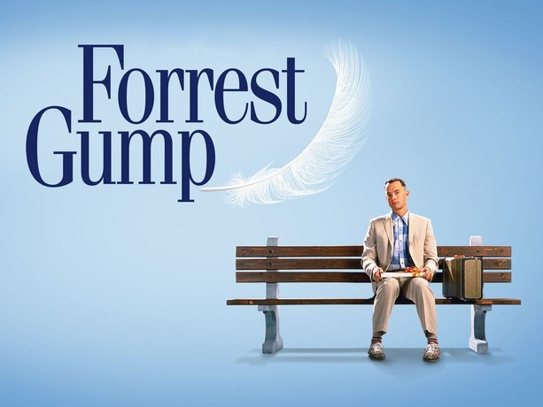

Released in 1994, Forrest Gump is a cinematic gem that continues to touch hearts decades after its debut. Directed by Robert Zemeckis and based on the novel by Winston Groom, the film stars Tom Hanks in one of his most iconic roles. Forrest Gump, a kind-hearted man with a low IQ but an unshakable moral compass, narrates his extraordinary journey through life—one that intersects with pivotal moments in American history, from the Vietnam War to the civil rights movement, all while unknowingly influencing events and people around him.
At its core, Forrest Gump delivers a powerful message about the value of innocence, perseverance, and kindness. Forrest's simple yet profound perspective on life—summed up in the famous line, “Life is like a box of chocolates. You never know what you’re gonna get.”—reminds viewers that greatness doesn’t always come from intellect or ambition, but from love, loyalty, and staying true to oneself. Despite numerous challenges, Forrest’s unwavering dedication to his loved ones and his optimistic view of the world show that anyone, regardless of their circumstances, can lead a meaningful and impactful life.
The movie is packed with fascinating facts. For instance, Tom Hanks wasn’t paid a salary for his role but chose to receive a share of the film’s profits instead—a decision that reportedly earned him over $60 million. The film’s visual effects were groundbreaking at the time, using digital technology to seamlessly insert Forrest into historical footage with presidents like John F. Kennedy and Richard Nixon. Also, the iconic running scenes were partly filmed with Hanks’ brother Jim Hanks serving as his body double.
Forrest Gump won six Academy Awards, including Best Picture, Best Actor, and Best Director, and it remains a beloved classic that continues to inspire generations. It's a beautiful reminder that sometimes, the most extraordinary lives belong to the most ordinary people.